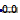
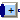
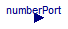
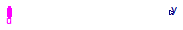

| Name | Description |
|---|---|
|  ShowValue | Show Real value from numberPort or from number input field in diagram layer dynamically |
|  Sum | Sum of Reals: y = k[1]*u[1] + k[2]*u[2] + ... + k[n]*u[n] |
| Product | Product of Reals: y = u[1]*u[2]* ... *u[n] |
| MultiSwitch | Set Real expression that is associated with the first active input signal |

| Type | Name | Default | Description |
|---|---|---|---|
| Boolean | use_numberPort | true | = true, if numberPort enabled |
| Real | number | 0.0 | Number to visualize if use_numberPort=false (time varying) |
| Integer | precision | 3 | Number of significant digits to be shown |
| Type | Name | Description |
|---|---|---|
| input RealInput | numberPort | Number to be shown in diagram layer if use_numberPort = true |
| output RealOutput | number2 |
block ShowValue
"Show Real value from numberPort or from number input field in diagram layer dynamically"
parameter Boolean use_numberPort = true "= true, if numberPort enabled";
input Real number = 0.0
"Number to visualize if use_numberPort=false (time varying)";
parameter Integer precision(min=0) = 3
"Number of significant digits to be shown";
Modelica.Blocks.Interfaces.RealInput numberPort if use_numberPort
"Number to be shown in diagram layer if use_numberPort = true";
Modelica.Blocks.Interfaces.RealOutput number2;
equation
if use_numberPort then
connect(numberPort, number2);
else
number2 = number;
end if;
end ShowValue;
| Type | Name | Default | Description |
|---|---|---|---|
| Real | k[nu] | fill(1, nu) | Input gains |
| Advanced | |||
| Integer | precision | 3 | Number of significant digits to be shown in dynamic diagram layer for y |
| Type | Name | Description |
|---|---|---|
| input RealVectorInput | u[nu] | |
| output RealOutput | y |
block Sum "Sum of Reals: y = k[1]*u[1] + k[2]*u[2] + ... + k[n]*u[n]" extends Modelica_StateGraph2.Blocks.Interfaces.PartialRealMISO; parameter Real k[nu] = fill(1,nu) "Input gains"; equation y = k*u;end Sum;
| Type | Name | Default | Description |
|---|---|---|---|
| Advanced | |||
| Integer | precision | 3 | Number of significant digits to be shown in dynamic diagram layer for y |
| Type | Name | Description |
|---|---|---|
| input RealVectorInput | u[nu] | |
| output RealOutput | y |
block Product "Product of Reals: y = u[1]*u[2]* ... *u[n]" extends Modelica_StateGraph2.Blocks.Interfaces.PartialRealMISO; equation y = product(u);end Product;

The block has a vector of Boolean input signals u[nu] and a vector of (time varying) Real expressions expr[:]. The output signal y is set to expr[i], if i is the first element in the input vector u that is true. If all input signals are false, y is set to parameter "y_default":
// Conceptual equation (not valid Modelica) i = 'first element of u[:] that is true'; y = if i==0 then y_default else expr[i];
| Type | Name | Default | Description |
|---|---|---|---|
| Real | expr[nu] | fill(0.0, nu) | y = if u[i] then expr[i] else y_default (time varying) |
| Real | y_default | 0.0 | Default value of output y if all u[i] = false |
| Advanced | |||
| Integer | precision | 3 | Number of significant digits to be shown in dynamic diagram layer for y |
| Type | Name | Description |
|---|---|---|
| input BooleanVectorInput | u[nu] | Set y = expr[i], if u[i] = true |
| output RealOutput | y | Output depending on expression |
block MultiSwitch
"Set Real expression that is associated with the first active input signal"
input Real expr[nu]=fill(0.0, nu)
"y = if u[i] then expr[i] else y_default (time varying)";
parameter Real y_default=0.0
"Default value of output y if all u[i] = false";
parameter Integer nu(min=0) = 0 "Number of input connections";
parameter Integer precision(min=0) = 3
"Number of significant digits to be shown in dynamic diagram layer for y";
Modelica_StateGraph2.Blocks.Interfaces.BooleanVectorInput u[nu]
"Set y = expr[i], if u[i] = true";
Modelica.Blocks.Interfaces.RealOutput y(start=y_default,fixed=true)
"Output depending on expression";
protected
Integer firstActiveIndex;
initial equation
pre(u) = fill(false,nu);
equation
firstActiveIndex = BooleanFunctions.firstTrueIndex(u);
y = if firstActiveIndex == 0 then y_default else expr[firstActiveIndex];
end MultiSwitch;